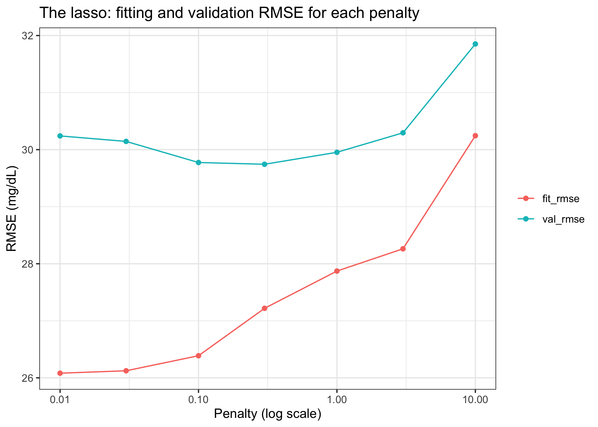
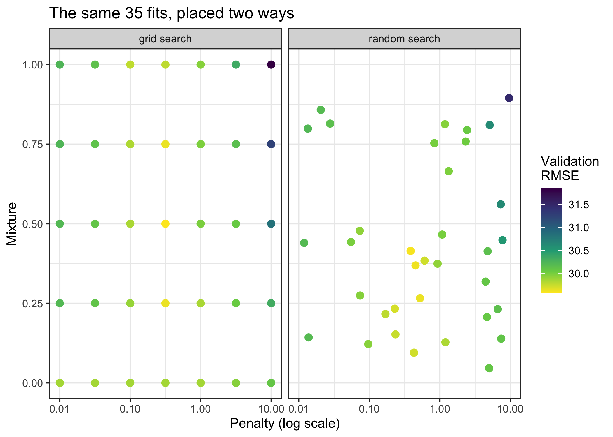
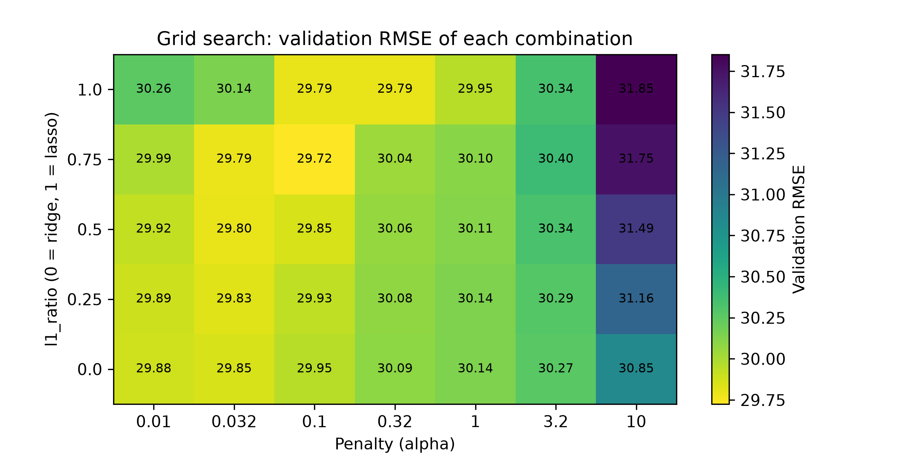
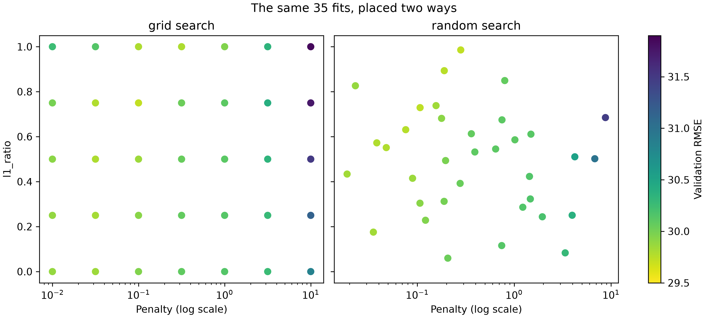

# Packages for this exercise. If one is missing, remove the # and run this line once:
# install.packages(c("tidyverse", "tidymodels", "glmnet"))
library(tidyverse)
library(tidymodels)
theme_set(theme_bw()) # white background for every plot
options(pillar.sigfig = 4) # show four significant figures in tablesExercise 5.2 — Hyperparameters: choosing the lasso and ridge penalty
Some settings of a model are not learnt from the data: we choose them before fitting. They are called hyperparameters. In this exercise the hyperparameters are those of regularisation: a linear regression that pays a price for large coefficients, so that it fits the training rows a little less closely in exchange for a simpler model. How large the price is, \(\lambda\), must be chosen, and we choose it by trying several values and keeping the one that predicts best on rows the model has not seen. The page Lasso and ridge in a picture explains what the penalty does.
Theory: hyperparameters; a validation set; the lasso and ridge penalties; grid search, random search and zooming in; refitting the chosen model and checking it once on the test rows.
NoteThe plots are for looking at
The code for every plot is folded away just above it, in case you are curious, and all of it is in the notebook linked at the top of each tab. You are not expected to write it yourself.
Download this exercise as an R Markdown notebook (.Rmd): the text and every code cell of the R version, including the code for the plots, with the blanks left for you to fill in. Open it in RStudio and run it a chunk at a time.
Packages and data
The same 750 people and the same split as Exercise 5.1, from data/diabetes_clean.csv. The outcome is glucose again, but this time the other seven measurements are the predictors. In pressure, triceps and insulin a zero means “not measured”, so we turn the zeros into NA and let the recipe fill them in.
diabetes <- read_csv("data/diabetes_clean.csv") |>
select(-diabetes) |> # glucose is the outcome
mutate(across(c(pressure, triceps, insulin), ~ na_if(.x, 0))) # 0 means "not measured"
test_rows <- seq(1, nrow(diabetes), by = 5) # every fifth person is held back
train <- diabetes[-test_rows, ]
test <- diabetes[test_rows, ]Part 1 — A validation set
The test rows are for one final check of the model we choose. If we also use them to make the choice, we pick whichever candidate happened to do best on those 150 people, and its test RMSE is no longer an honest estimate (the Stretch of Exercise 5.1). So we split the training rows once more. Every fourth training row becomes a validation row: the candidates are fitted on the other rows and compared on these.
val_rows <- seq(1, nrow(train), by = 4) # every fourth training row
fitting <- train[-val_rows, ]
validation <- train[val_rows, ]
nrow(fitting)#> [1] 450nrow(validation)#> [1] 150nrow(test)#> [1] 150450 rows to fit each candidate, 150 to compare the candidates, and 150 for the final check.
NoteComing later: cross-validation
One validation set is the simplest way to compare candidates, but the result depends on which 150 people landed in it. In Exercise 5.4 you will learn cross-validation, a resampling method that repeats the comparison on several different splits of the training rows, and the functions that run the whole search for you.
Now a model with plenty of room to overfit. The recipe fills in the missing values with the median (Day 2), adds every product of two predictors (pregnant_x_age, …) and every square, and standardises the result. Seven predictors become 35 columns.
glucose_rec <- recipe(glucose ~ ., data = fitting) |>
step_impute_median(all_predictors()) |> # fill the missing values
step_interact(terms = ~ all_predictors():all_predictors()) |> # products of two predictors
step_poly(all_predictors(), -contains("_x_"), degree = 2,
options = list(raw = TRUE)) |> # each predictor and its square
step_normalize(all_predictors()) # one scale for every column
glucose_rec |>
prep() |>
bake(new_data = NULL) |>
dim()#> [1] 450 36450 rows and 36 columns: glucose and the 35 predictor columns. Fit an ordinary linear regression, with no penalty, and compare its RMSE on the fitting and the validation rows:
plain_fit <- workflow() |>
add_recipe(glucose_rec) |>
add_model(linear_reg()) |>
fit(data = fitting)
augment(plain_fit, new_data = fitting) |>
rmse(truth = glucose, estimate = .pred)#> # A tibble: 1 × 3
#> .metric .estimator .estimate
#> <chr> <chr> <dbl>
#> 1 rmse standard 26.06augment(plain_fit, new_data = validation) |>
rmse(truth = glucose, estimate = .pred)#> # A tibble: 1 × 3
#> .metric .estimator .estimate
#> <chr> <chr> <dbl>
#> 1 rmse standard 30.3226.06 on the rows it was fitted on, 30.32 on the validation rows: the 35 columns have been used to fit some of the noise in the 450 people.
ImportantLearning points
- A hyperparameter is a setting we choose before fitting; the fitting does not choose it for us. The degree of the polynomial in Exercise 5.1 was one.
- Candidates are compared on validation rows that were not used to fit them. The test rows are kept for one final check.
Part 2 — One hyperparameter: a simple grid search
The lasso adds a penalty \(\lambda \times \sum_j |\beta_j|\) to the fitting (see Lasso and ridge in a picture). \(\lambda\) is the hyperparameter: in tidymodels it is called penalty, and mixture = 1 asks for the lasso. We mark penalty with tune(), a placeholder for “to be chosen”, and fill it in later with finalize_workflow():
lasso_wf <- workflow() |>
add_recipe(glucose_rec) |>
add_model(linear_reg(penalty = tune(), mixture = 1) |>
set_engine("glmnet"))A grid search tries a list of values, fits one model for each, and keeps the one with the lowest validation RMSE. Seven penalties, each about three times the one before:
# Replace every ______ below, then run this cell.
penalties <- c(0.01, 0.03, 0.1, 0.3, 1, 3, 10)
lasso_results <- data.frame()
for (p in penalties) {
lasso_fit <- lasso_wf |>
finalize_workflow(tibble(penalty = p)) |> # fill in the placeholder
fit(data = fitting)
fit_rmse <- augment(lasso_fit, new_data = fitting) |>
rmse(truth = glucose, estimate = .pred)
val_rmse <- augment(lasso_fit, new_data = ______) |>
rmse(truth = glucose, estimate = .pred)
kept <- tidy(lasso_fit) |>
filter(term != "(Intercept)", estimate != 0) |>
nrow() # columns the lasso kept
lasso_results <- bind_rows(lasso_results,
data.frame(penalty = p,
fit_rmse = fit_rmse$.estimate,
val_rmse = val_rmse$.estimate,
kept = kept))
}
lasso_results
TipStuck?
The candidates are compared on the rows that were not used to fit them.
Code for this plot (optional)
lasso_results |>
pivot_longer(c(fit_rmse, val_rmse), names_to = "rows", values_to = "rmse") |>
ggplot(aes(x = penalty, y = rmse, colour = rows)) +
geom_line() +
geom_point() +
scale_x_log10() +
labs(x = "Penalty (log scale)", y = "RMSE (mg/dL)", colour = NULL,
title = "The lasso: fitting and validation RMSE for each penalty")
Read the table from top to bottom. The fitting RMSE only ever goes up: a larger penalty always fits the fitting rows less closely. The validation RMSE first falls, from 30.24 to its lowest value, 29.74 at a penalty of 0.3, and then rises again, to 31.85 at 10. The penalty 0.3 is chosen because it has the lowest validation RMSE, and at that penalty the lasso keeps 14 of the 35 columns.
Question! Why not choose the penalty with the lowest fitting RMSE?
ImportantLearning points
- A grid search fits one model for each candidate value and keeps the candidate with the lowest validation error.
- Too small a penalty overfits, too large a penalty underfits; the validation error is lowest in between.
- The fitting error always prefers the smallest penalty, so it cannot be used to choose.
Part 3 — Two hyperparameters: a grid of combinations
mixture is a second hyperparameter: 1 is the lasso, 0 is ridge, and values in between mix the two penalties. Mark both with tune():
enet_wf <- workflow() |>
add_recipe(glucose_rec) |>
add_model(linear_reg(penalty = tune(), mixture = tune()) |>
set_engine("glmnet"))With two hyperparameters a grid search tries every combination. grid_regular() builds the grid: 7 penalties from 0.01 to 10 (the range is given on the log10 scale) and 5 mixtures from 0 to 1, so 7 × 5 = 35 combinations.
regular_grid <- grid_regular(penalty(range = c(-2, 1)),
mixture(),
levels = c(penalty = 7, mixture = 5))
regular_grid#> # A tibble: 35 × 2
#> penalty mixture
#> <dbl> <dbl>
#> 1 0.01 0
#> 2 0.03162 0
#> 3 0.1 0
#> 4 0.3162 0
#> 5 1 0
#> 6 3.162 0
#> 7 10 0
#> 8 0.01 0.25
#> 9 0.03162 0.25
#> 10 0.1 0.25
#> # ℹ 25 more rowsFitting and scoring a candidate is the same few lines every time, so we put them in a function and call it once for each row of the grid:
validation_rmse <- function(penalty, mixture) {
fitted <- enet_wf |>
finalize_workflow(tibble(penalty = penalty, mixture = mixture)) |>
fit(data = fitting)
augment(fitted, new_data = validation) |>
rmse(truth = glucose, estimate = .pred) |>
pull(.estimate)
}
regular_grid$val_rmse <- NA
for (i in 1:nrow(regular_grid)) {
regular_grid$val_rmse[i] <- validation_rmse(regular_grid$penalty[i],
regular_grid$mixture[i])
}
regular_grid |>
arrange(val_rmse) |>
head(5)#> # A tibble: 5 × 3
#> penalty mixture val_rmse
#> <dbl> <dbl> <dbl>
#> 1 0.3162 0.5 29.58
#> 2 0.3162 0.25 29.64
#> 3 0.3162 0.75 29.64
#> 4 0.1 1 29.77
#> 5 0.3162 1 29.78Code for this plot (optional)
ggplot(regular_grid, aes(x = factor(signif(penalty, 2)), y = factor(mixture),
fill = val_rmse)) +
geom_tile(colour = "white") +
geom_text(aes(label = round(val_rmse, 2)), size = 3) +
scale_fill_viridis_c(direction = -1) +
labs(x = "Penalty", y = "Mixture (0 = ridge, 1 = lasso)", fill = "Validation\nRMSE",
title = "Grid search: validation RMSE of each combination")
The best combination is a penalty of 0.32 with a mixture of 0.5, at 29.58: a little better than the best lasso of Part 2 (29.74). Most of the grid lies between 29.6 and 30.4; only the largest penalty is clearly worse.
ImportantLearning points
- With several hyperparameters, a grid search tries every combination, so the number of fits multiplies: 7 × 5 = 35 here.
tune()marks a hyperparameter to be chosen;finalize_workflow()fills in a value.
Part 4 — Other ways to search
A grid is not the only way to choose the candidates. Random search draws the same number of combinations at random from the same ranges:
set.seed(123)
random_grid <- grid_random(penalty(range = c(-2, 1)),
mixture(),
size = 35)
random_grid$val_rmse <- NA
for (i in 1:nrow(random_grid)) {
random_grid$val_rmse[i] <- validation_rmse(random_grid$penalty[i],
random_grid$mixture[i])
}
random_grid |>
arrange(val_rmse) |>
head(5)#> # A tibble: 5 × 3
#> penalty mixture val_rmse
#> <dbl> <dbl> <dbl>
#> 1 0.3840 0.4145 29.60
#> 2 0.4511 0.3688 29.63
#> 3 0.5223 0.2660 29.64
#> 4 0.2291 0.2330 29.70
#> 5 0.4287 0.09484 29.72Code for this plot (optional)
bind_rows(mutate(regular_grid, search = "grid search"),
mutate(random_grid, search = "random search")) |>
ggplot(aes(x = penalty, y = mixture, colour = val_rmse)) +
geom_point(size = 2.5) +
scale_x_log10() +
scale_colour_viridis_c(direction = -1) +
facet_wrap(~ search) +
labs(x = "Penalty (log scale)", y = "Mixture", colour = "Validation\nRMSE",
title = "The same 35 fits, placed two ways")
The random search finds 29.60 (penalty 0.38, mixture 0.41), as good as the grid for the same 35 fits. Look at the plot: the grid tries only 7 different penalties, the random search 35. When one hyperparameter matters much more than the other, as the penalty does here, random search explores it more finely.
A third way is to zoom in: start with a coarse grid, then search a finer grid around the best combination. Build a 5 × 5 grid with penalties from 0.1 to 1 and mixtures from 0.25 to 0.75 around the best of Part 3, and score it:
# Replace every ______ below, then run this cell.
fine_grid <- grid_regular(penalty(range = c(______, ______)), # log10 of 0.1 and of 1
mixture(range = c(0.25, 0.75)),
levels = c(penalty = 5, mixture = 5))
fine_grid$val_rmse <- NA
for (i in 1:nrow(fine_grid)) {
fine_grid$val_rmse[i] <- validation_rmse(fine_grid$penalty[i],
fine_grid$mixture[i])
}
fine_grid |>
arrange(val_rmse) |>
head(5)
TipStuck?
The range is on the log10 scale: \(\log_{10}(0.1) = -1\) and \(\log_{10}(1) = 0\).
There are cleverer searches still, which choose each new candidate using the results so far, but they all work the same way: propose candidates, score each on data the model was not fitted on, keep the best.
ImportantLearning points
- Grid search, random search and zooming in differ only in which candidates they try; each candidate is scored the same way.
- For the same number of fits, random search tries more distinct values of each hyperparameter.
Part 5 — The final model and its one test
Take the best candidate of all the searches. Fit it once more, now on all 600 training rows (fitting and validation together), and check it once on the test rows. Do the same for the unpenalised model, to compare:
# Replace every ______ below, then run this cell.
best <- bind_rows(regular_grid, random_grid, fine_grid) |>
slice_min(val_rmse, n = 1, with_ties = FALSE) # the lowest; one row even if tied
best
final_fit <- enet_wf |>
finalize_workflow(best |> select(penalty, mixture)) |>
fit(data = train)
plain_final <- workflow() |>
add_recipe(glucose_rec) |>
add_model(linear_reg()) |>
fit(data = ______)
augment(final_fit, new_data = test) |>
rmse(truth = glucose, estimate = .pred)
augment(plain_final, new_data = ______) |>
rmse(truth = glucose, estimate = .pred)
TipStuck?
Both models are fitted on the same rows, and both are checked on the rows that were held back from the start.
Question! The penalised model is only a little more accurate on the test rows, but it uses about half the columns. Why might that still matter?
ImportantLearning points
- Once the hyperparameters are chosen, refit on all the training rows and check the model once on the test rows.
- The test rows played no part in any choice, so the test RMSE is an honest estimate for new people.
Download this exercise as a Jupyter notebook (.ipynb): the text and every code cell of the Python version, including the code for the plots, with the blanks left for you to fill in. Open it in Jupyter or VS Code and run it a cell at a time.
Packages and data
# Packages for this exercise. If one is missing, install it once from a terminal
# (in a Jupyter notebook, type %pip instead of pip):
# pip install pandas numpy matplotlib scikit-learn scipy
import pandas as pd
import numpy as np
import matplotlib.pyplot as plt
from sklearn.pipeline import Pipeline
from sklearn.impute import SimpleImputer
from sklearn.preprocessing import PolynomialFeatures, StandardScaler
from sklearn.linear_model import LinearRegression, Lasso, ElasticNet
from sklearn.model_selection import ParameterGrid, ParameterSampler
from sklearn.metrics import root_mean_squared_error
from scipy.stats import loguniform, uniformThe same 750 people and the same split as Exercise 5.1, from data/diabetes_clean.csv. The outcome is glucose again, but this time the other seven measurements are the predictors. In pressure, triceps and insulin a zero means “not measured”, so we turn the zeros into missing values and let the pipeline fill them in.
diabetes = pd.read_csv("data/diabetes_clean.csv").drop(columns="diabetes") # glucose is the outcome
for col in ["pressure", "triceps", "insulin"]:
diabetes[col] = diabetes[col].replace(0, np.nan) # 0 means "not measured"
predictors = ["pregnant", "pressure", "triceps", "insulin", "mass", "pedigree", "age"]
is_test = diabetes.index % 5 == 0 # every fifth person is held back
train = diabetes[~is_test]
test = diabetes[is_test]Part 1 — A validation set
The test rows are for one final check of the model we choose. If we also use them to make the choice, we pick whichever candidate happened to do best on those 150 people, and its test RMSE is no longer an honest estimate (the Stretch of Exercise 5.1). So we split the training rows once more. Every fourth training row becomes a validation row: the candidates are fitted on the other rows and compared on these.
is_val = np.arange(len(train)) % 4 == 0 # every fourth training row
fitting = train[~is_val]
validation = train[is_val]
print(len(fitting), len(validation), len(test))#> 450 150 150450 rows to fit each candidate, 150 to compare the candidates, and 150 for the final check.
NoteComing later: cross-validation
One validation set is the simplest way to compare candidates, but the result depends on which 150 people landed in it. In Exercise 5.4 you will learn cross-validation, a resampling method that repeats the comparison on several different splits of the training rows, and the functions that run the whole search for you.
Now a model with plenty of room to overfit. The pipeline fills in the missing values with the median (Day 2), adds every square and every product of two predictors with PolynomialFeatures(degree=2), and standardises the result. Seven predictors become 35 columns.
plain_pipe = Pipeline([
("impute", SimpleImputer(strategy="median")), # fill the missing values
("poly", PolynomialFeatures(degree=2, include_bias=False)), # squares and products
("scale", StandardScaler()), # one scale for every column
("model", LinearRegression()),
])
plain_pipe = plain_pipe.fit(fitting[predictors], fitting["glucose"])
print("columns:", plain_pipe["poly"].n_output_features_)#> columns: 35print("fitting RMSE: ", round(root_mean_squared_error(fitting["glucose"], plain_pipe.predict(fitting[predictors])), 2))#> fitting RMSE: 26.06print("validation RMSE:", round(root_mean_squared_error(validation["glucose"], plain_pipe.predict(validation[predictors])), 2))#> validation RMSE: 30.3226.06 on the rows it was fitted on, 30.32 on the validation rows: the 35 columns have been used to fit some of the noise in the 450 people.
ImportantLearning points
- A hyperparameter is a setting we choose before fitting; the fitting does not choose it for us. The degree of the polynomial in Exercise 5.1 was one.
- Candidates are compared on validation rows that were not used to fit them. The test rows are kept for one final check.
Part 2 — One hyperparameter: a simple grid search
The lasso adds a penalty \(\lambda \times \sum_j |\beta_j|\) to the fitting (see Lasso and ridge in a picture). In scikit-learn the lasso is Lasso(), and \(\lambda\) is its alpha. The hyperparameter of a step in a pipeline is set with set_params(), using the step’s name, two underscores and the setting’s name: model__alpha. (max_iter lets the fitting run longer than the default, because the squares and products are correlated and take longer to fit.)
lasso_pipe = Pipeline([
("impute", SimpleImputer(strategy="median")),
("poly", PolynomialFeatures(degree=2, include_bias=False)),
("scale", StandardScaler()),
("model", Lasso(max_iter=50000)),
])A grid search tries a list of values, fits one model for each, and keeps the one with the lowest validation RMSE. Seven penalties, each about three times the one before:
# Replace every ______ below, then run this cell.
penalties = [0.01, 0.03, 0.1, 0.3, 1, 3, 10]
rows = []
for p in penalties:
lasso_pipe.set_params(model__alpha=p) # fill in the hyperparameter
lasso_pipe.fit(fitting[predictors], fitting["glucose"])
fit_rmse = root_mean_squared_error(fitting["glucose"], lasso_pipe.predict(fitting[predictors]))
val_rmse = root_mean_squared_error(______["glucose"], lasso_pipe.predict(______[predictors]))
kept = (lasso_pipe["model"].coef_ != 0).sum() # columns the lasso kept
rows.append({"penalty": p, "fit_rmse": fit_rmse, "val_rmse": val_rmse, "kept": kept})
lasso_results = pd.DataFrame(rows)
lasso_results.round(2)
TipStuck?
The candidates are compared on the rows that were not used to fit them.
Code for this plot (optional)
fig, ax = plt.subplots()
ax.plot(lasso_results["penalty"], lasso_results["fit_rmse"], marker="o", label="fit_rmse")
ax.plot(lasso_results["penalty"], lasso_results["val_rmse"], marker="o", label="val_rmse")
ax.set_xscale("log")
ax.set_xlabel("Penalty (log scale)")
ax.set_ylabel("RMSE (mg/dL)")
ax.set_title("The lasso: fitting and validation RMSE for each penalty")
ax.legend()
plt.show()
Read the table from top to bottom. The fitting RMSE only ever goes up: a larger penalty always fits the fitting rows less closely. The validation RMSE first falls, from 30.26 to its lowest value, 29.75 at a penalty of 0.3, and then rises again, to 31.85 at 10. The penalty 0.3 is chosen because it has the lowest validation RMSE, and at that penalty the lasso keeps 14 of the 35 columns.
Question! Why not choose the penalty with the lowest fitting RMSE?
ImportantLearning points
- A grid search fits one model for each candidate value and keeps the candidate with the lowest validation error.
- Too small a penalty overfits, too large a penalty underfits; the validation error is lowest in between.
- The fitting error always prefers the smallest penalty, so it cannot be used to choose.
Part 3 — Two hyperparameters: a grid of combinations
ElasticNet() has a second hyperparameter, l1_ratio: 1 is the lasso, 0 is ridge, and values in between mix the two penalties.
enet_pipe = Pipeline([
("impute", SimpleImputer(strategy="median")),
("poly", PolynomialFeatures(degree=2, include_bias=False)),
("scale", StandardScaler()),
("model", ElasticNet(max_iter=50000)),
])With two hyperparameters a grid search tries every combination. ParameterGrid() builds the grid from a list of values for each: 7 penalties from 0.01 to 10 and 5 values of l1_ratio from 0 to 1, so 7 × 5 = 35 combinations. Each combination is a dictionary that set_params() can take.
regular_grid = ParameterGrid({"model__alpha": np.logspace(-2, 1, 7), # 0.01 to 10
"model__l1_ratio": [0, 0.25, 0.5, 0.75, 1]})
print(len(regular_grid))#> 35print(regular_grid[0])#> {'model__l1_ratio': 0, 'model__alpha': np.float64(0.01)}Fitting and scoring a candidate is the same few lines every time, so we put them in a function and call it once for each combination:
def validation_rmse(params):
enet_pipe.set_params(**params)
enet_pipe.fit(fitting[predictors], fitting["glucose"])
return root_mean_squared_error(validation["glucose"], enet_pipe.predict(validation[predictors]))
rows = []
for params in regular_grid:
rows.append({**params, "val_rmse": validation_rmse(params)})
regular_results = pd.DataFrame(rows)
regular_results.sort_values("val_rmse").head(5).round(3)#> model__alpha model__l1_ratio val_rmse
#> 13 0.100 0.75 29.725
#> 8 0.032 0.75 29.789
#> 14 0.100 1.00 29.791
#> 19 0.316 1.00 29.793
#> 7 0.032 0.50 29.799Code for this plot (optional)
table = regular_results.pivot(index="model__l1_ratio", columns="model__alpha", values="val_rmse")
fig, ax = plt.subplots(figsize=(8, 4))
im = ax.imshow(table, cmap="viridis_r", aspect="auto", origin="lower")
ax.set_xticks(range(table.shape[1]), [f"{a:.2g}" for a in table.columns])
ax.set_yticks(range(table.shape[0]), table.index)
for i in range(table.shape[0]):
for j in range(table.shape[1]):
ax.text(j, i, f"{table.iloc[i, j]:.2f}", ha="center", va="center", fontsize=8)
ax.set_xlabel("Penalty (alpha)")
ax.set_ylabel("l1_ratio (0 = ridge, 1 = lasso)")
ax.set_title("Grid search: validation RMSE of each combination")
fig.colorbar(im, ax=ax, label="Validation RMSE")#> <matplotlib.colorbar.Colorbar object at 0x3301b4f10>Code for this plot (optional)
plt.show()
The best combination is a penalty of 0.1 with l1_ratio 0.75, at 29.72: a little better than the best lasso of Part 2 (29.75). Most of the grid lies between 29.7 and 30.4; only the largest penalty is clearly worse.
ImportantLearning points
- With several hyperparameters, a grid search tries every combination, so the number of fits multiplies: 7 × 5 = 35 here.
- In a pipeline,
set_params(model__alpha=...)sets the hyperparameter of the step calledmodel.
Part 4 — Other ways to search
A grid is not the only way to choose the candidates. Random search draws the same number of combinations at random from the same ranges. ParameterSampler() draws them: the penalty from a log-uniform distribution between 0.01 and 10, and l1_ratio uniformly between 0 and 1.
random_grid = ParameterSampler({"model__alpha": loguniform(0.01, 10),
"model__l1_ratio": uniform(0, 1)},
n_iter=35, random_state=123)
rows = []
for params in random_grid:
rows.append({**params, "val_rmse": validation_rmse(params)})
random_results = pd.DataFrame(rows)
random_results.sort_values("val_rmse").head(5).round(3)#> model__alpha model__l1_ratio val_rmse
#> 23 0.281 0.986 29.733
#> 5 0.107 0.729 29.742
#> 18 0.190 0.893 29.755
#> 14 0.076 0.631 29.771
#> 34 0.038 0.572 29.785Code for this plot (optional)
fig, axes = plt.subplots(1, 2, figsize=(10, 4.5), sharey=True, layout="constrained")
for ax, results, title in [(axes[0], regular_results, "grid search"),
(axes[1], random_results, "random search")]:
points = ax.scatter(results["model__alpha"], results["model__l1_ratio"],
c=results["val_rmse"], cmap="viridis_r", s=40,
vmin=29.5, vmax=31.9)
ax.set_xscale("log")
ax.set_xlabel("Penalty (log scale)")
ax.set_title(title)
axes[0].set_ylabel("l1_ratio")
fig.colorbar(points, ax=axes, label="Validation RMSE")#> <matplotlib.colorbar.Colorbar object at 0x333bac450>Code for this plot (optional)
fig.suptitle("The same 35 fits, placed two ways")
plt.show()
The random search finds 29.73 (penalty 0.28, l1_ratio 0.99), as good as the grid for the same 35 fits. Look at the plot: the grid tries only 7 different penalties, the random search 35. When one hyperparameter matters much more than the other, as the penalty does here, random search explores it more finely.
A third way is to zoom in: start with a coarse grid, then search a finer grid around the best combination. Build a 5 × 5 grid with penalties from 0.03 to 0.3 and l1_ratio from 0.5 to 1 around the best of Part 3, and score it:
# Replace every ______ below, then run this cell.
fine_grid = ParameterGrid({"model__alpha": np.logspace(______, ______, 5), # log10 of 0.03 and of 0.3
"model__l1_ratio": [0.5, 0.625, 0.75, 0.875, 1]})
rows = []
for params in fine_grid:
rows.append({**params, "val_rmse": validation_rmse(params)})
fine_results = pd.DataFrame(rows)
fine_results.sort_values("val_rmse").head(5).round(3)
TipStuck?
np.logspace() takes the powers of 10: \(\log_{10}(0.03) \approx -1.5\) and \(\log_{10}(0.3) \approx -0.5\).
There are cleverer searches still, which choose each new candidate using the results so far, but they all work the same way: propose candidates, score each on data the model was not fitted on, keep the best.
ImportantLearning points
- Grid search, random search and zooming in differ only in which candidates they try; each candidate is scored the same way.
- For the same number of fits, random search tries more distinct values of each hyperparameter.
Part 5 — The final model and its one test
Take the best candidate of all the searches. Fit it once more, now on all 600 training rows (fitting and validation together), and check it once on the test rows. Do the same for the unpenalised model, to compare:
# Replace every ______ below, then run this cell.
all_results = pd.concat([regular_results, random_results, fine_results])
best = all_results.sort_values("val_rmse").iloc[0]
print(best)
enet_pipe.set_params(model__alpha=best["model__alpha"], model__l1_ratio=best["model__l1_ratio"])
enet_pipe.fit(train[predictors], train["glucose"])
plain_pipe.fit(______[predictors], ______["glucose"])
print("chosen model, test RMSE: ", round(root_mean_squared_error(test["glucose"], enet_pipe.predict(test[predictors])), 2))
print("unpenalised model, test RMSE:", round(root_mean_squared_error(______["glucose"], plain_pipe.predict(______[predictors])), 2))
TipStuck?
Both models are fitted on the same rows, and both are checked on the rows that were held back from the start.
Question! The penalised model is only a little more accurate on the test rows, but it uses about half the columns. Why might that still matter?
ImportantLearning points
- Once the hyperparameters are chosen, refit on all the training rows and check the model once on the test rows.
- The test rows played no part in any choice, so the test RMSE is an honest estimate for new people.
Stretch
NoteStretch — a different validation set
Make the validation rows every fourth training row starting from the second (seq(2, nrow(train), by = 4) in R, np.arange(len(train)) % 4 == 1 in Python) and run the lasso grid of Part 2 again. Is the same penalty chosen? What does that tell you about choosing with a single validation set?